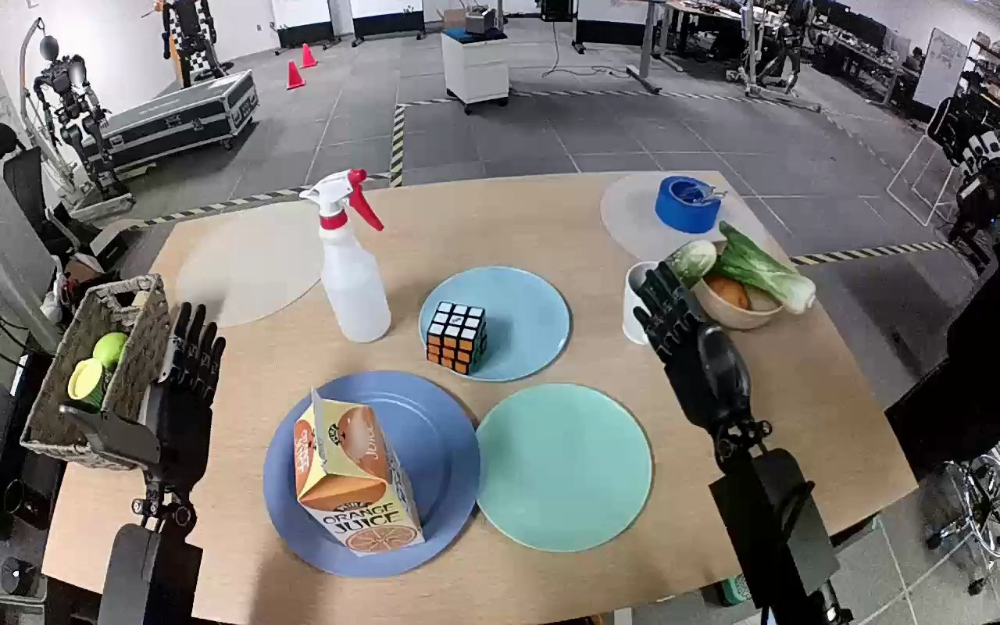

NVIDIA GR1 · 33
Video 33

Visual review action_review.json
{
"prompt_protocol": "humanoid_action_v1",
"prompt_provenance": "visually_authored_from_video_and_initial_frame",
"reviewed_contact_sheets": [
"sheet_001.jpg"
],
"inspected_frame_stride": 2,
"inspected_sampled_frame_count": 60,
"initial_scene": "An egocentric elevated view looks forward between the robot's two forearms. A Rubik's cube rests on a light blue plate farther from the robot; an empty teal plate is nearer and to the robot's right. Both hands are initially open; the left remains beside a basket while the right manipulates the cube.",
"observed_sequence": [
{
"start_frame": 0,
"end_frame": 18,
"action": "Both hands remain open and raised; cube rests on the light blue plate.",
"confidence": "high"
},
{
"start_frame": 19,
"end_frame": 61,
"action": "Right arm moves inward and extends over the light blue plate, orienting the open hand around the cube; left hand stays clear.",
"confidence": "high"
},
{
"start_frame": 62,
"end_frame": 86,
"action": "Right fingers and thumb close around opposing faces of the cube while it remains over the source plate.",
"confidence": "high"
},
{
"start_frame": 87,
"end_frame": 97,
"action": "Right hand lifts the cube visibly clear of the light blue plate and begins carrying it toward the nearer teal plate.",
"confidence": "high"
},
{
"start_frame": 98,
"end_frame": 113,
"action": "Right arm brings the held cube over the teal plate and lowers it toward its surface, retaining the grasp.",
"confidence": "high"
},
{
"start_frame": 114,
"end_frame": 119,
"action": "Cube reaches the teal plate and the right fingers open away from its upper faces. The hand remains around and close to the cube at the ending; there is no subsequent clear withdrawal.",
"confidence": "high for arrival and opening, moderate for full disengagement"
}
],
"arm_hand_roles": {
"right": "Sole manipulating hand: reaches, closes fingers and thumb around cube, lifts, transports to teal plate, lowers, and begins opening at the end.",
"left": "Open and largely stationary beside the basket; does not grasp, stabilize, support, or receive the cube.",
"coordination": "Single-hand manipulation; no hand-to-hand transfer or supporting contact."
},
"anatomical_side_evidence": "The initial image is a forward-looking robot viewpoint between paired forearms. Each forearm enters from the corresponding near lower side, with thumbs oriented inward toward the space between the arms. The active forearm is connected toward the robot's lower-right side and its thumb/finger orientation is consistent with the anatomical right hand; the opposite near-left hand remains idle. Shoulder attachment is outside this camera view, so naming uses this paired forearm and thumb geometry, not image side alone.",
"evidence_frame_indices": [
0,
60,
76,
90,
96,
104,
112,
116,
118,
119
],
"terminal_state": "The light blue plate is empty. The cube is positioned on the teal plate, with the right fingers opening and the hand still close around its upper/side region. The left hand remains open and clear. Full hand withdrawal is not shown.",
"uncertainties": [
"The right thumb overlaps the cube in the final view; complete loss of all hand contact and a stable hands-clear resting state cannot be confirmed. The prompt therefore describes lowering onto the plate and visible finger opening, without claiming a completed withdrawal."
],
"annotation_discrepancies": [],
"selected_execution_status": "incomplete",
"video_id": "33",
"dataset": "NVIDIA_GR1_100",
"dedicated_review_agent": "review_gr1_33",
"review_source_video": "NVIDIA_GR1_100/33/original/original.mp4",
"source_frame_count": 120,
"source_fps": 20.0,
"native_detail_frames": [
60,
76,
90,
96,
104,
112,
116,
118,
119
],
"world_model_prompt": "The robot uses its right hand to close its fingers around the Rubik's cube on the light blue plate, lift it clear, and carry it toward the teal plate. It lowers the cube onto the teal plate and opens its fingers around it, ending with the hand still close to the cube. Keep the camera fixed; preserve robot geometry, physically valid joint motion, and normal gripper opening and closing.",
"original_task_instruction": "Use the right hand to pick up rubik's cube from light blue plate to teal plate.",
"selected_segment": {
"start_frame": 0,
"end_frame_exclusive": 120,
"reason": "Complete original single-task reference; no cropping or trimming requested."
},
"source_video_sha256": "572dc96bcaaf73c9fd48691ef870b84b161bb2d420f0a3956d1ad9b352b91d46",
"review_completed_at": "2026-10-13T17:57:57.583171+00:00"
}